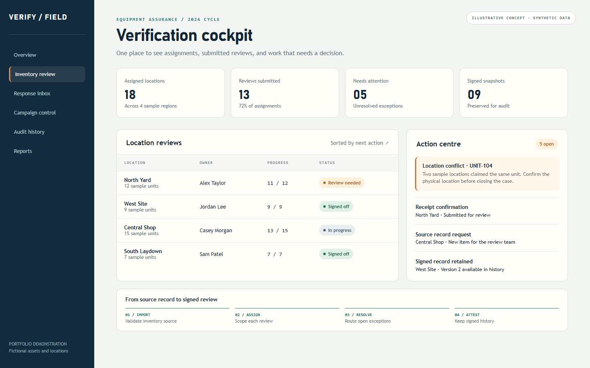
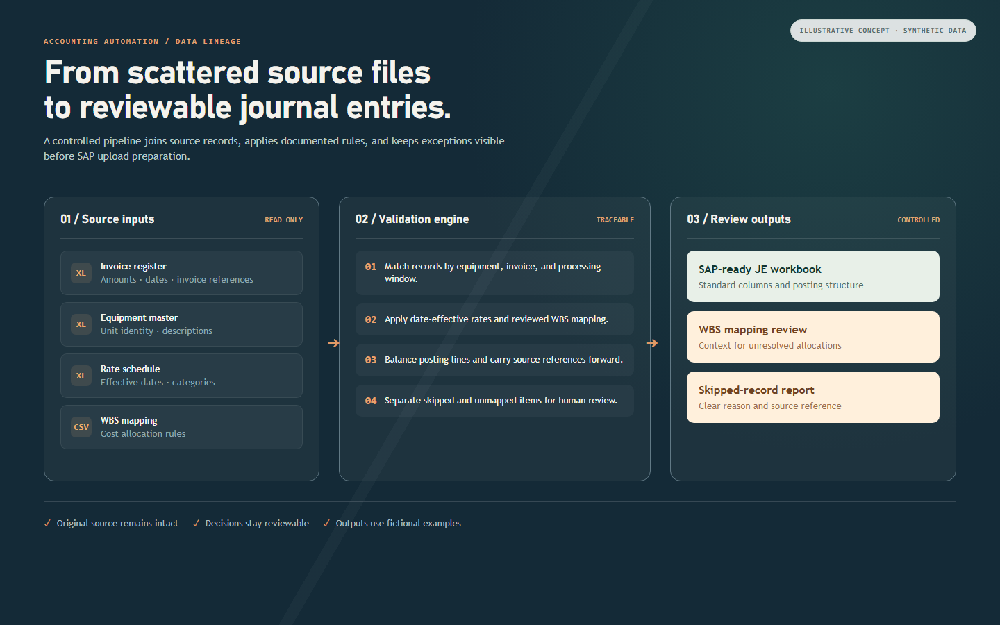

01 · Professional system
Inventory Verification Portal
A role-based workflow for turning dispersed equipment reviews into scoped assignments, exception routing, sign-offs, and traceable history.
Read case study
Momin Ejaz · software developer · Alberta, Canada
I build applications, automation, and data tools that connect the people doing the work with information they can review, trace, and use.
01
Built around real workflows. Designed for the people who use them.
Projects & products
Explore eight projects across applications, automation, and reporting. Each case study explains the problem, my approach, and the engineering decisions.
Showing 8 projects
01 · Professional system
A role-based workflow for turning dispersed equipment reviews into scoped assignments, exception routing, sign-offs, and traceable history.
Read case study
02 · Accounting automation
Python processing that brings invoices, rates, equipment records, and WBS mappings into SAP-ready templates and reviewable exceptions.
Read case study
03 · Workflow modernization
A multi-project application that brings familiar spreadsheet workflows into a shared, validated system while retaining source history and export patterns.
Read case study04 · Data quality
A reporting workflow that combines fleet workbooks with equipment readings and keeps exceptions visible before final output.
Read case study05 · Accounting workflow
Workbook validation, controlled review, documented processing rules, and SAP-ready output for equipment-accounting workflows.
Read case study06 · Analytical review
A structured source-to-report review of model relationships, transformations, measures, and filter behavior.
Read case study07 · Android MVP
An offline reading and listening app for web pages and documents, built around flexible imports, speech, and portable libraries.
Read case study08 · Local proof of concept
A local learning platform for structured courses, learner progress, assignments, reporting, and controlled media access.
Read case studyFreelance & consulting
Alongside professional roles, I work as a Freelance Software Developer with MeTech Consulting Inc. I help turn a business need into a scoped software project that a team can build and maintain.
Start a conversationUnderstand the workflow, users, constraints, and decision the software needs to support.
Define a plan, deliverable boundaries, project schedule, and terms tied to the agreed scope.
Coordinate requirements with the software team and keep the work moving toward a useful outcome.
About
I work from requirements and process design through data modeling, development, testing, deployment preparation, and support. The constant is clear business rules: people should know where a value came from, what needs review, and who made a decision.
Python · TypeScript · JavaScript · React · FastAPI · Fastify · SQL · Flutter/Dart
pandas · openpyxl · Excel/VBA · Power BI · DAX · Playwright · SAP preparation
Azure App Service · Azure SQL · Microsoft Entra ID · GitHub Actions · testing · user support
Experience
Roles across construction, manufacturing, accounting workflows, and project-controls technology.
2020 — present
Graham · Edmonton, Alberta
Developed client reporting, quality tracking, multiuser timesheet, accounting, data-processing, and project-controls tools.
2013 — present
MeTech Consulting Inc. · Greater Calgary
Client discovery, scope definition, proposals, requirements coordination, scheduling, and contract negotiation.
2018 — 2020
Pine Profiles Inc. · Creston, British Columbia
Inventory management, barcoding, Arduino trim controls, costing, and manufacturing reporting.
2017
Quinn Contracting Ltd · Chetwynd, British Columbia
Cost reporting, rate validation, schedule inputs, KPI reporting, and project dashboards.
2015
Husky Energy · Alberta
Turnover documentation, tracking, QR-based record custody, automated audits, and reporting tools.
2013 — 2014
Husky Energy · Calgary, Alberta
OFM setup, production reporting, analogue analysis, and automated data workflows.
Get in touch
Tell me what your team is working on, where the process gets stuck, and what a better outcome would look like.